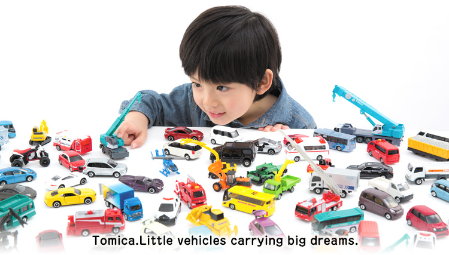

Halo semua!!! Disini aku ingin memperlihatkan beberapa koleksiku. Lebih tepatnya sebuah diecast mobil, dengan merek yaitu Tomica. Tomica merupakan mainan diecast asal jepang dan sudah diproduksi sejak tahun 1970. Kenapa koleksi diecast dari merek tomica? sebelum mengoleksi diecast merek tomica, saya mengoleksi diecast merek hot wheels. Saya iseng awalnya membeli merek tomica, karena harga dari tomica itu hampir 1 1/2 kali dari harga hot wheels. Setelah saya melihat secara langsung, ternyata ada perbedaan yang cukup menarik, yaitu lebih detail dalam pewarnaan, dasar material yang lebih berkualitas dan mendapatkan box yang kece :D
Introductions
No.58 Honda Civic Type R (white)
No.84 Lexus RC F Performance Package
No.78 Nissan GT-R Nismo 2020 Model
No.51 Toyota Crown Comfort Taxi
No.6 Audi R8
No.33 Volkswagen The Beetle
No.58 Honda Civic Type R (white)

Mobil keluaran tahun 2022 ini memiliki tampilan yang menarik seperti mobil balap, dan untuk harganya rata-rata dijual dengan harga Rp.50.000 hingga Rp.55.000